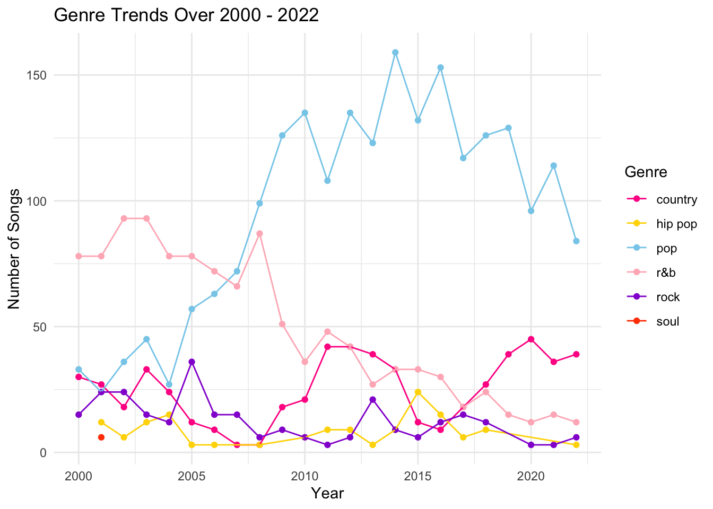

library(ggplot2)
library(dplyr)
Attaching package: 'dplyr'The following objects are masked from 'package:stats':
filter, lagThe following objects are masked from 'package:base':
intersect, setdiff, setequal, unionMusic has always been a cornerstone of human expression and cultural identity. As we journey through the 21st century, we embark on a quest to unravel the intricate tapestry of music preferences that have shaped our collective experience. From the rise of digital streaming platforms to the emergence of new genres and artists, the landscape of popular music has undergone profound transformations, reflecting the ever-evolving tastes and trends of society.
It’s important to study the evolution public taste in music since it gives us insights into broader cultural shifts and trends. The analysis of streaming data would show the changes in the popularity of different music genres in different time and this can reflect the shifts in cultural preferences. Music can act as a cultural and economic force. The public preferences for popular songs can implicate some social and economic implications, this relates to consumer spending habits, brand perception and even political attitudes. Public preferences directly influence the success of artists, labels, streaming platforms, etc. By tracking changes in popular song preferences, stakeholders in the music industry can adapt their strategies to meet evolving consumer demands.
There are 3 data visualizations in the following paragraphs, which include a trend line, a columns chart and an interactive bar chart.
In terms of the data, it’s a group of data that illustrates the top 100 ranking songs through 2000 - 2022 published by billboard which is an American music and entertainment magazine.
The trend lines of each genre from 2000 to 2022 reveal intriguing insights into the evolution of public taste in music over the past two decades. Each line represents a different genre, showcasing how its popularity has fluctuated over time.
Attaching package: 'dplyr'The following objects are masked from 'package:stats':
filter, lagThe following objects are masked from 'package:base':
intersect, setdiff, setequal, union
One notable trend is the rise of pop genres, which have seen steady growth in popularity since the early 2000s. This reflects the increasing influence of urban culture and mainstream acceptance of hop as a dominant force in the music industry.
Conversely, r&b, rock genres have experienced a decline in popularity over the same period. This could be attributed to changing demographics and shifts in cultural preferences among younger audiences.
Salsa and soul genres have maintained a relatively stable presence throughout the years, indicating a consistent demand for these timeless musical styles.
It can be seen that from the graph, country musics experienced a decline in 2000 - 2008. However, it staged a comeback after 2010, and we can see it’s maintaining a good popularity since then.
Overall, the trend lines paint a dynamic picture of how musical tastes have evolved over time, reflecting broader cultural shifts and societal changes. It can be seen that pop musics will still be the main stream, and other insights can be invaluable for music industry stakeholders, helping them to anticipate future trends and tailor their offerings to meet evolving consumer preferences.
The columns chart provides a snapshot comparison of genre distribution between 2000 and 2022. It illustrates how the landscape of popular music has shifted over the past two decades.
In 2000, rnb dominated the charts, representing the preferences of mainstream audiences at the time. However, by 2022, pop has emerged as the dominant genre, reflecting its growing influence and cultural significance. Whereas the percentage for rnb musics keeps decreasing.
This shift mirrors broader societal changes, including the rise of digital streaming platforms and the increasing diversification of music consumption habits. As a result, artists and record labels have adapted their strategies to capitalize on emerging trends and reach new audiences.